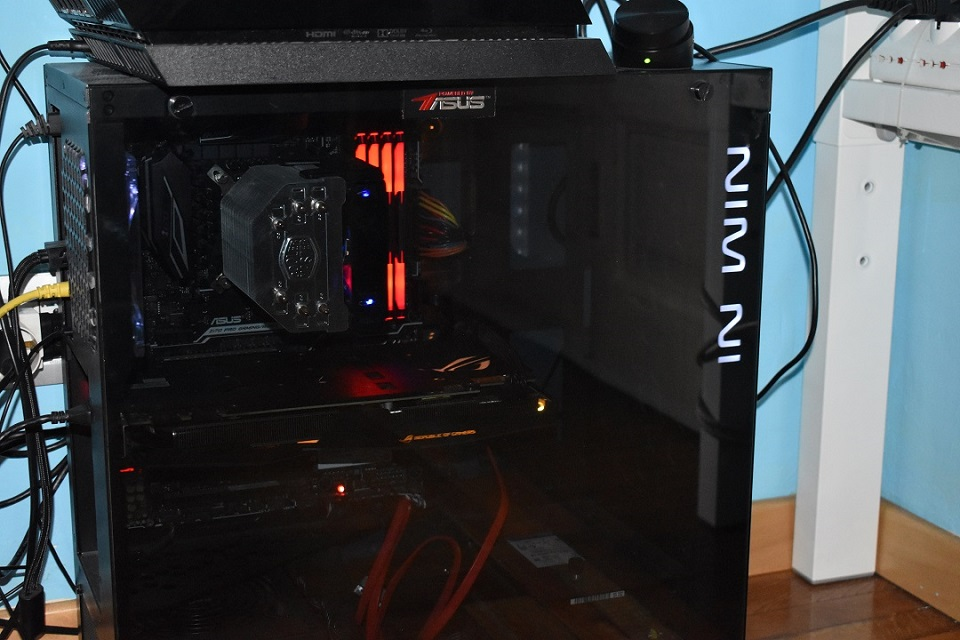

Gabriele Morabito
Sono Gabriele Morabito, frequento la classe 3°B Informatica dell'istituto tecnico
Avogadro di Torino.
Questa qua sotto è la mia scuola:
Qualcosa in più su:
Astrofotografia
Il mio computer
Sono appassionato di moto, astronomia, fotografia e fotoastronomia.
Ho anche l'hobby dell'hardware pc, infatti tre anni fa mi sono assemblato il mio primo computer.
Nel tempo libero giro in moto/bicicletta oppure seguo dei corsi di fotografia.
 |
Queste sono un esempio di alcune foto che
scatto nel tempo libero o in posti particolari. |
 |
Invece queste sono le foto notturne migliori che
ho scattato quest'estate in montagna. |
--------> |
Torna su
|
|  |
Questo è il mio computer:
-Processore: Intel I7 6700 (3.40 GHz);
-Scheda madre: Asus Z170 Aura;
-Scheda video: Asus Rog Strix Gtx 1070 8G;
-RAM: 32GB Corsair Vengeance 3200 MHz
-Alimentatore: Corsair CX750M (750 Watt);
-Dissipatore: Cooler Master non ricordo il nome;
-Hard Disk: Western Digital 1TB;
-SSD: Kingston 240GB NVMe;
|
--------> |
Torna su
|